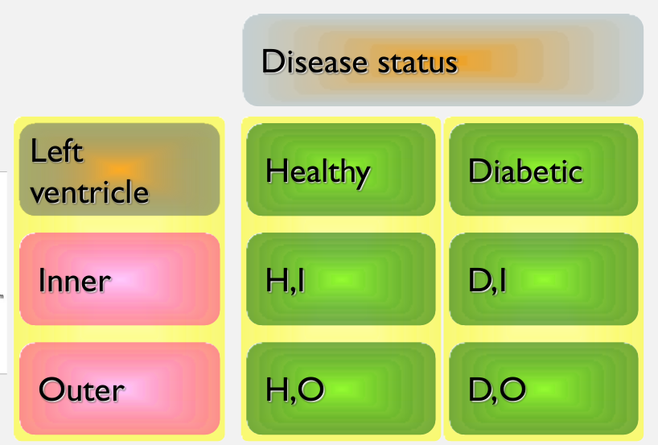
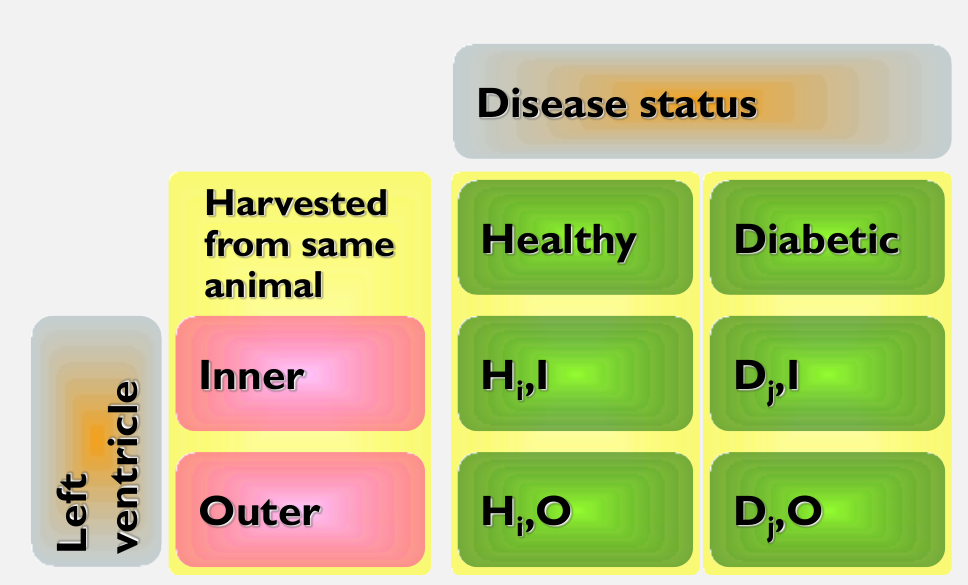
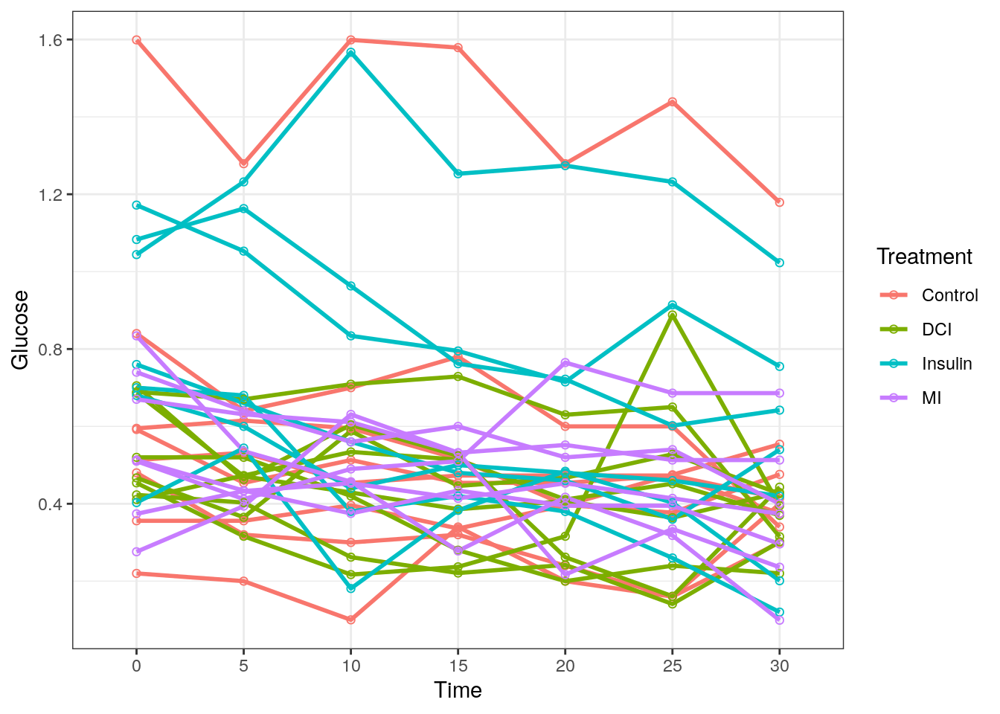
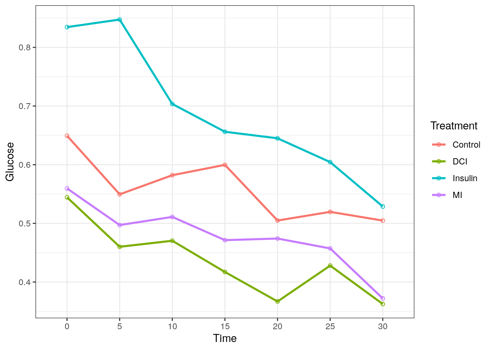
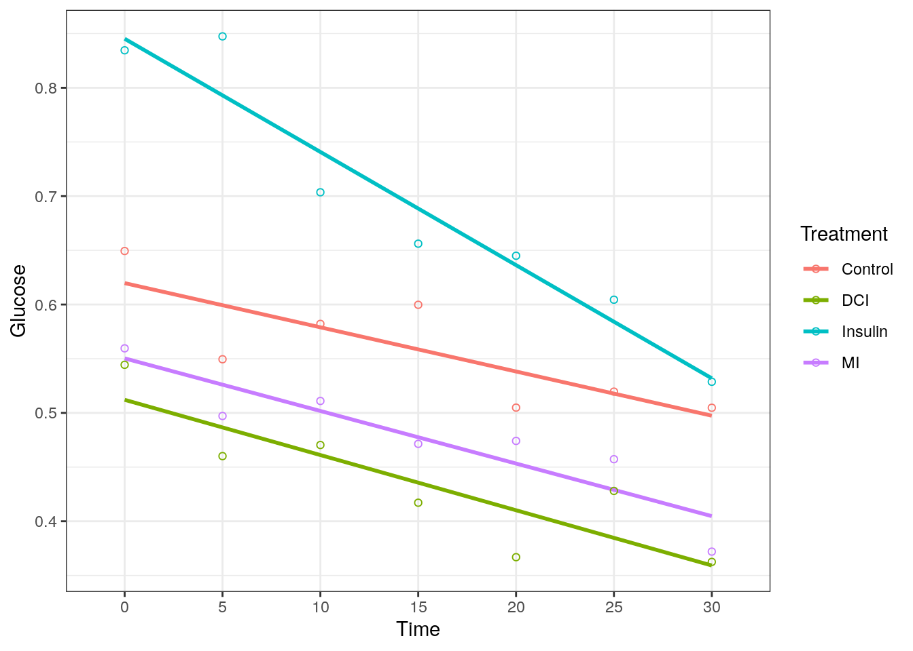

9 Split-plot and repeated measures designs
9.1 Learning objectives
- Describe and discuss split-plot experimental design
- Describe and discuss repeated measures experiments
- Write
Rcode to visualise repeated measures data - Carry out appropriate analysis in
Rand draw the appropriate inference
9.2 Analysis of a split-plot design
Recall the diabetic and healthy male Wistar rats...
 BUT what about
 Data available on CANVAS
split_plot <- read_csv("split_plot.csv")## recall we need to set factors
split_plot$Animal <- factor(split_plot$Animal)
split_plot$Sample <- factor(split_plot$Sample)
split_plot## # A tibble: 12 x 5
## Disease Organ Animal Sample logAUC
## <chr> <chr> <fct> <fct> <dbl>
## 1 Healthy innerLV 1 1 9.4
## 2 Healthy outerLV 1 2 8.83
## 3 Healthy innerLV 2 1 10.3
## 4 Healthy outerLV 2 2 10.5
## 5 Healthy innerLV 3 1 9.74
## 6 Healthy outerLV 3 2 11.0
## 7 Diabetic innerLV 4 1 7.92
## 8 Diabetic outerLV 4 2 9.37
## 9 Diabetic innerLV 5 1 8.69
## 10 Diabetic outerLV 5 2 11.3
## 11 Diabetic innerLV 6 1 7.01
## 12 Diabetic outerLV 6 2 9.299.2.1 Using aov()
sp_aov <- aov(logAUC ~ Disease*Organ + Error(Animal/Sample), data = split_plot)
summary(sp_aov)##
## Error: Animal
## Df Sum Sq Mean Sq F value Pr(>F)
## Disease 1 3.183 3.183 2.187 0.213
## Residuals 4 5.822 1.456
##
## Error: Animal:Sample
## Df Sum Sq Mean Sq F value Pr(>F)
## Organ 1 4.296 4.296 14.423 0.0191 *
## Disease:Organ 1 2.539 2.539 8.525 0.0433 *
## Residuals 4 1.191 0.298
## ---
## Signif. codes: 0 '***' 0.001 '**' 0.01 '*' 0.05 '.' 0.1 ' ' 19.2.2 Using lmer() (from lmeTest and lmer4) and predictmeans()
library(lmerTest) ## MUST LOAD THIS##
## Attaching package: 'lmerTest'## The following object is masked from 'package:lme4':
##
## lmer## The following object is masked from 'package:stats':
##
## stepsp_lmer <- lmerTest::lmer(logAUC ~ Disease*Organ + (1|Animal), data = split_plot) ## MUST SPECIFY WHICH PACKAGE
anova(sp_lmer,type = 2)## Type II Analysis of Variance Table with Satterthwaite's method
## Sum Sq Mean Sq NumDF DenDF F value Pr(>F)
## Disease 0.6513 0.6513 1 4 2.1866 0.21329
## Organ 4.2960 4.2960 1 4 14.4227 0.01914 *
## Disease:Organ 2.5392 2.5392 1 4 8.5246 0.04326 *
## ---
## Signif. codes: 0 '***' 0.001 '**' 0.01 '*' 0.05 '.' 0.1 ' ' 1library(lme4)
library(predictmeans)
sp_lmer4 <- lme4::lmer(logAUC ~ Disease*Organ + (1|Animal), data = split_plot) ## MUST SPECIFY WHICH PACKAGE
sp_predmeans <- predictmeans(sp_lmer4,modelterm = "Disease:Organ", pairwise = TRUE, plot = FALSE)
sp_predmeans## $`Predicted Means`
## Organ innerLV outerLV
## Disease
## Diabetic 7.8733 9.9900
## Healthy 9.8233 10.1000
##
## $`Standard Error of Means`
## All means have the same Stder
## 0.54058
##
## $`Standard Error of Differences`
## Max.SED Min.SED Aveg.SED
## 0.7645006 0.4456206 0.6582073
## attr(,"For the Same Level of Factor")
## Disease Organ
## Aveg.SED 0.4456206 0.7645006
## Min.SED 0.4456206 0.7645006
## Max.SED 0.4456206 0.7645006
##
## $LSD
## Max.LSD Min.LSD Aveg.LSD
## 2.12259 1.23724 1.82748
## attr(,"Significant level")
## [1] 0.05
## attr(,"Degree of freedom")
## [1] 4
##
## $`Pairwise LSDs`
## Diabetic:innerLV Diabetic:outerLV Healthy:innerLV
## Diabetic:innerLV 0.00000 -2.11667 -1.95000
## Diabetic:outerLV 1.23724 0.00000 0.16667
## Healthy:innerLV 2.12259 2.12259 0.00000
## Healthy:outerLV 2.12259 2.12259 1.23724
## Healthy:outerLV
## Diabetic:innerLV -2.22667
## Diabetic:outerLV -0.11000
## Healthy:innerLV -0.27667
## Healthy:outerLV 0.00000
## attr(,"Significant level")
## [1] 0.05
## attr(,"Degree of freedom")
## [1] 4
## attr(,"Note")
## [1] "LSDs matrix has mean differences (row-col) above the diagonal, LSDs (adjusted by 'none' method) below the diagonal"
##
## $`Pairwise p-value`
## Diabetic:innerLV Diabetic:outerLV Healthy:innerLV
## Diabetic:innerLV 0.0000 -4.7499 -2.5507
## Diabetic:outerLV 0.0090 0.0000 0.2180
## Healthy:innerLV 0.0633 0.8381 0.0000
## Healthy:outerLV 0.0436 0.8925 0.5683
## Healthy:outerLV
## Diabetic:innerLV -2.9126
## Diabetic:outerLV -0.1439
## Healthy:innerLV -0.6209
## Healthy:outerLV 0.0000
## attr(,"Degree of freedom")
## [1] 4
## attr(,"Note")
## [1] "The matrix has t-value above the diagonal, p-value (adjusted by 'none' method) below the diagonal"
## attr(,"Letter-based representation of pairwise comparisons at significant level '0.05'")
## Treatment Mean Group
## 1 Healthy:outerLV 10.100000 A
## 2 Diabetic:outerLV 9.990000 A
## 3 Healthy:innerLV 9.823333 AB
## 4 Diabetic:innerLV 7.873333 B
##
## $mean_table
## Disease Organ Predicted means Standard error Df LL of 95% CI UL of 95% CI
## 1 Diabetic innerLV 7.873333 0.5405835 4 6.372433 9.374234
## 2 Diabetic outerLV 9.990000 0.5405835 4 8.489099 11.490901
## 3 Healthy innerLV 9.823333 0.5405835 4 8.322433 11.324234
## 4 Healthy outerLV 10.100000 0.5405835 4 8.599099 11.6009019.3 Analysis of a repeated measures design
We have (balanced) data with the same number of observations on each rat at the same time points.
9.3.1 The data
Data available on CANVAS
library(tidyverse)
liver <- read_csv("repeated_measures_liver.csv")## change time to factor
liver$Time <- as.factor(liver$Time)
glimpse(liver)## Rows: 210
## Columns: 4
## $ Animal <chr> "Control1", "Control1", "Control1", "Control1", "Control1", …
## $ Treatment <chr> "Control", "Control", "Control", "Control", "Control", "Cont…
## $ Time <fct> 0, 5, 10, 15, 20, 25, 30, 0, 5, 10, 15, 20, 25, 30, 0, 5, 10…
## $ Glucose <dbl> 1.599, 1.279, 1.599, 1.579, 1.279, 1.439, 1.179, 0.840, 0.64…9.3.2 Visualise
plot data
ggplot(liver, aes(x = Time, y = Glucose, color = Treatment, group = Animal)) +
geom_line(size = 1) +
geom_point(shape = 1) +
theme_bw()
plot group means
liver_means <- liver %>% group_by(Time,Treatment) %>%
summarise(Glucose = mean(Glucose))## `summarise()` has grouped output by 'Time'. You can override using the `.groups` argument.ggplot(liver_means, aes(x = Time, y = Glucose, color = Treatment, group = Treatment)) +
geom_line(size = 1) +
geom_point(shape = 1) +
theme_bw()
linear?
ggplot(liver_means, aes(x = Time, y = Glucose, color = Treatment, group = Treatment)) +
geom_smooth(method = "lm", se = FALSE) +
geom_point(shape = 1) +
theme_bw()## `geom_smooth()` using formula 'y ~ x'
9.3.3 Using aov()
re_aov <- aov(Glucose ~ Treatment*Time + Error(Animal),data = liver)
summary(re_aov)##
## Error: Animal
## Df Sum Sq Mean Sq F value Pr(>F)
## Treatment 3 1.90 0.6335 1.407 0.263
## Residuals 26 11.71 0.4503
##
## Error: Within
## Df Sum Sq Mean Sq F value Pr(>F)
## Time 6 0.7973 0.13289 8.732 0.0000000334 ***
## Treatment:Time 18 0.2539 0.01411 0.927 0.547
## Residuals 156 2.3741 0.01522
## ---
## Signif. codes: 0 '***' 0.001 '**' 0.01 '*' 0.05 '.' 0.1 ' ' 19.3.4 Using lmer() (from lmerTest and lme4) and predictmeans()
library(lmerTest) ## MUST LOAD THIS
re_lmer <- lmerTest::lmer(Glucose ~ Treatment*Time + (1|Animal),data = liver) ## MUST SPECIFY WHICH PACKAGE
anova(re_lmer,type = 2)## Type II Analysis of Variance Table with Satterthwaite's method
## Sum Sq Mean Sq NumDF DenDF F value Pr(>F)
## Treatment 0.06423 0.021409 3 26 1.4068 0.2632
## Time 0.79731 0.132885 6 156 8.7318 0.00000003345 ***
## Treatment:Time 0.25390 0.014105 18 156 0.9269 0.5474
## ---
## Signif. codes: 0 '***' 0.001 '**' 0.01 '*' 0.05 '.' 0.1 ' ' 1library(lme4)
library(predictmeans)
re_lmer4 <- lme4::lmer(Glucose ~ Treatment*Time + (1|Animal),data = liver) ## MUST SPECIFY WHICH PACKAGE
predictmeans::residplot(re_lmer4)
sp_predmeans <- predictmeans(re_lmer4,modelterm = "Time", pairwise = TRUE)
sp_predmeans## $`Predicted Means`
## Time
## 0 5 10 15 20 25 30
## 0.6470 0.5885 0.5668 0.5361 0.4977 0.5023 0.4420
##
## $`Standard Error of Means`
## All means have the same Stder
## 0.0509
##
## $`Standard Error of Differences`
## Max.SED Min.SED Aveg.SED
## 0.03192336 0.03192336 0.03192336
##
## $LSD
## Max.LSD Min.LSD Aveg.LSD
## 0.06306 0.06306 0.06306
## attr(,"Significant level")
## [1] 0.05
## attr(,"Degree of freedom")
## [1] 156
##
## $`Pairwise LSDs`
## 0 5 10 15 20 25 30
## 0 0.00000 0.05842 0.08021 0.11086 0.14925 0.14464 0.20498
## 5 0.06306 0.00000 0.02178 0.05244 0.09083 0.08621 0.14656
## 10 0.06306 0.06306 0.00000 0.03066 0.06904 0.06443 0.12478
## 15 0.06306 0.06306 0.06306 0.00000 0.03839 0.03378 0.09412
## 20 0.06306 0.06306 0.06306 0.06306 0.00000 -0.00461 0.05573
## 25 0.06306 0.06306 0.06306 0.06306 0.06306 0.00000 0.06034
## 30 0.06306 0.06306 0.06306 0.06306 0.06306 0.06306 0.00000
## attr(,"Significant level")
## [1] 0.05
## attr(,"Degree of freedom")
## [1] 156
## attr(,"Note")
## [1] "LSDs matrix has mean differences (row-col) above the diagonal, LSDs (adjusted by 'none' method) below the diagonal"
##
## $`Pairwise p-value`
## 0 5 10 15 20 25 30
## 0 0.0000 1.8301 2.5124 3.4727 4.6753 4.5308 6.4211
## 5 0.0691 0.0000 0.6823 1.6426 2.8451 2.7007 4.5909
## 10 0.0130 0.4961 0.0000 0.9603 2.1628 2.0184 3.9086
## 15 0.0007 0.1025 0.3384 0.0000 1.2025 1.0581 2.9483
## 20 0.0000 0.0050 0.0321 0.2310 0.0000 -0.1445 1.7458
## 25 0.0000 0.0077 0.0453 0.2917 0.8853 0.0000 1.8903
## 30 0.0000 0.0000 0.0001 0.0037 0.0828 0.0606 0.0000
## attr(,"Degree of freedom")
## [1] 156
## attr(,"Note")
## [1] "The matrix has t-value above the diagonal, p-value (adjusted by 'none' method) below the diagonal"
## attr(,"Letter-based representation of pairwise comparisons at significant level '0.05'")
## Treatment Mean Group
## 1 0 0.6469732 A
## 2 5 0.5885491 AB
## 3 10 0.5667679 B
## 4 15 0.5361116 BC
## 5 25 0.5023348 CD
## 6 20 0.4977232 CD
## 7 30 0.4419911 D
##
## $mean_table
## Time Predicted means Standard error Df LL of 95% CI UL of 95% CI
## 1 0 0.6469732 0.05089815 156 0.5464347 0.7475117
## 2 5 0.5885491 0.05089815 156 0.4880106 0.6890876
## 3 10 0.5667679 0.05089815 156 0.4662294 0.6673063
## 4 15 0.5361116 0.05089815 156 0.4355731 0.6366501
## 5 20 0.4977232 0.05089815 156 0.3971847 0.5982617
## 6 25 0.5023348 0.05089815 156 0.4017963 0.6028733
## 7 30 0.4419911 0.05089815 156 0.3414526 0.54252969.4 Repeated measures designs as split-plots in time
In this set of balanced data we have + Same number of observations on each rat + At the same time points
We could analyse as a split-plot design, where + plots = different rats + subplots = different times within a rat
Here we would have two error components + Between rats + Between times within rats
There are, however, two big differences between Repeated Measures and Split-plot Designs 1. Cannot randomise the levels of time + Measurement 2 hours, comes after that at 1 hour 2. Split plot design block structure + Imposes the same correlation on any two subplots in the the same plot + Implausible for repeated measures designs as observations further apart in time likely to be less correlated than observations close together